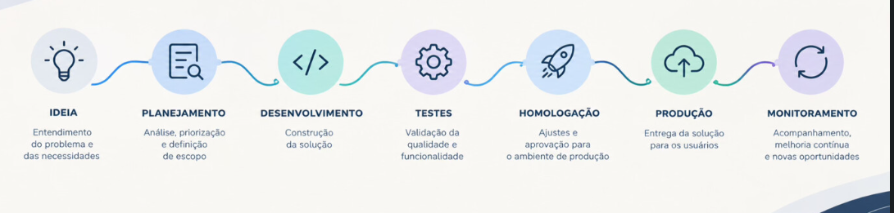

Atuei em qualidade de identidade digital e pagamentos PIX na Pay2Free, com KYC, documentoscopia, prova de vida, Face Match, depósitos e saques nas integrações Banux/Pixer. Acompanhei os fluxos da interface à decisão persistida, com trabalho de automação, investigação e reteste em sandbox junto a Desenvolvimento.
Em pagamentos, acompanhei o retorno HTTP, o estado financeiro, a decisão de negócio e a entrega do callback. Na automação, um dos runners suportava 18 dos 50 cenários do catálogo Banux. Na identidade digital, revalidei as etapas de OCR e PAD no AWS Bedrock e conferi os resultados com o estado do onboarding.
Como conduzi a validação de ponta a ponta
Defini a regra e a evidência esperada. Antes de executar, mapeei a jornada e identifiquei o que deveria acontecer em cada camada: resposta da API, evento assíncrono, estado no banco e retorno para o usuário ou estabelecimento.
Preparei o ambiente e a massa. Registrei a configuração inicial, a dependência do simulador ou fornecedor e os dados necessários para reproduzir a execução. Ao avaliar uma regra configurável, comparei o comportamento com a regra ativada e desativada.
Executei e capturei os pontos de correlação. Usei Ruby/HTTParty nos fluxos de API e Selenium/CDP no onboarding Web. Registrei o identificador da execução, os horários e os retornos para acompanhar a mesma operação entre interface, serviços e banco.
Conferi o estado persistido. Com acesso de leitura ao MongoDB, comparei cobrança, saque, devolução e callback nos fluxos PIX. No KYC, cruzei OCR, decisão biométrica e estado de verificação. Quando disponíveis, CloudWatch e Datadog ajudaram a reconstruir a sequência.
Registrei a conclusão e tratei o reteste. Documentei a primeira divergência entre o esperado e o observado e levei a evidência a Desenvolvimento. Quando o simulador ou a massa limitava a conclusão, registrei a dependência e o que precisava ser verificado em nova execução.
KYC e biometria facial
Acompanhei a jornada desde a consulta cadastral e abertura da sessão até a decisão de verificação. O objetivo era demonstrar que o estado apresentado ao usuário correspondia às etapas efetivamente concluídas no backend.
Consulta e elegibilidade. Comparei retornos para cadastros regulares, inválidos, não localizados e sujeitos a restrições. Cruzei o Hub, o cache de Liveness, a base de consultas sem resultado e o fornecedor para investigar campos ausentes, registros não gravados e reconsultas indevidas por plano.
Jornada Web e mobile. Acompanhei o disparo e a autenticação, o consentimento, a seleção e o envio do documento, o OCR e a captura facial. A automação cuidava do disparo, upload e navegação. A selfie permanecia manual.
Validação biométrica. Correlacionei o identificador da jornada com a leitura documental, o veredito de prova de vida, a execução do Face Match, a similaridade e o estado persistido. Avaliei cada etapa separadamente para localizar divergências de decisão.
Similaridade facial observada. Em duas verificações com correspondência, o sistema registrou scores de 68,44 e 59,31 diante de um limiar configurado de 40 no ambiente observado. Conferi o score, o limiar, o veredito e o indicador de execução do Face Match. A cobertura próxima ao limiar e a comparação entre pessoas diferentes ficaram em aberto. Os valores são scores do motor, cuja interpretação como porcentagem exige confirmação da escala.
Automação de onboarding com agentes e pausa para biometria
O onboarding era uma aplicação da automação orquestrada por agentes. Os agentes usavam requisitos, evidências recuperadas pelo RAG e observações da interface para decidir como acompanhar a jornada. O runner Ruby com Selenium/CDP executava as etapas repetíveis. O trabalho com Playwright, Smart Locator e MCP complementava a automação Web na identificação de elementos, navegação e análise da interface.
Início da jornada. O runner disparava a sessão, acompanhava a navegação, registrava o identificador da transação e preparava o upload. O agente ajudava a interpretar a tela e a identificar mudanças que afetavam a execução.
Captura facial. Ao chegar à etapa de biometria, o fluxo aguardava a interação humana. Eu realizava a captura e cumpria as orientações de prova de vida na interface. O resultado biométrico vinha do serviço de identidade.
Retomada e verificação. Depois da captura, a automação acompanhava a navegação e as respostas de rede até o resultado. Correlacionei a mesma transação com o retorno de OCR, PAD, Face Match e a decisão persistida no MongoDB.
Revisão da execução. Verifiquei se havia um desfecho explícito e se interface, API e banco concordavam. Diante de uma divergência, localizei a etapa em que ela surgiu e registrei a evidência para investigação ou reteste.
O acervo documenta três rotinas Ruby para disparo de Liveness, envio de documento e acompanhamento completo da jornada. A execução se conectava ao fluxo de QA no Jira pelos critérios de aceite e pelas evidências usadas no retorno da história.
Orquestração KYC e integração com fornecedores
Documentei o encadeamento de consentimento, seleção de documento, frente e verso, upload, OCR, selfie real, PAD, Face Match e decisão de onboarding. Conferi a coerência entre tela, API, MongoDB e BackOffice, incluindo diferenças entre Web e mobile e os pontos em que o usuário poderia retomar uma sessão em outro canal.
Avaliei a operação com Unico, Serasa e o motor próprio. O motor interno fazia parte da estratégia de substituição futura dos provedores externos. Durante a transição, acompanhei seleção de fornecedor, pesos, prioridades, fallback em indisponibilidade, cache por plano e reconsulta. Conferi qual rota foi escolhida, qual resultado chegou ao backend e qual decisão foi persistida. Na consulta cadastral, usei a persistência para diferenciar ausência de registro, retorno incompleto e reconsulta indevida.
Nas evidências de OCR, comparei a extração dos dados com os atributos de qualidade do documento, a mensagem de nova captura e o estado de onboarding. A matriz de reteste incluiu documento digital por canal, concorrência Web/mobile, tentativas e bloqueio, qualidade da selfie e tempo de resposta. A presença de documento vencido ou desgastado foi registrada como variável das amostras.
AWS Bedrock · Documentoscopia e segurança de IA
Reteste após troca de modelos no AWS Bedrock: Grok 4.3 para OCR/documentoscopia e Gemma 3 12B IT para PAD; registro anterior mencionava Claude Sonnet, sem identificação verificável de versão. Objetivo: avaliar entradas adversariais, separação entre OCR e validação de identidade, detecção de instruções não confiáveis, segurança de upload e decisão server-side. Testes autorizados em sandbox, com documentos próprios e massas sintéticas. Evidências brutas mantidas fora do Git. Não foram usados rostos de terceiros sem consentimento.
Comparei o reconhecimento do documento, a presença facial e a decisão final para identificar em qual camada cada resultado era produzido. Essa distinção orientou a análise de inconsistências entre o retorno do modelo, o estado no MongoDB e a orientação entregue ao usuário.
Grok 4.3 e documentoscopia. Na revisão do pipeline, avaliei tipificação de CNH, RG/CIN e passaporte, leitura de frente e verso, extração de campos, qualidade da imagem e consistência com o cadastro.
Gemma 3 e prova de vida. Acompanhei o retorno de PAD e comparei a decisão de presença real com a etapa posterior de Face Match e o resultado gravado. Isso permitiu avaliar qual componente aprovava, rejeitava ou encaminhava a jornada.
Resultado por camada. Houve rejeições antes da análise do modelo e também jornadas em que o OCR extraiu conteúdo, mas a camada biométrica bloqueou a verificação. Registrei esse comportamento nas condições exercitadas, preservando a diferença entre a leitura de um documento e a aprovação da identidade.
Cobertura documental por canal. Conferi o tipo selecionado e o reconhecido, a disponibilidade de documento digital na Web e no mobile, a leitura de frente e verso quando exigida e o tratamento de documentos vencidos, danificados ou com baixa qualidade de captura. Comparei o motivo registrado com a orientação apresentada ao usuário.
Segurança cibernética e integridade de IA e APIs
Atuei em duas superfícies ligadas ao risco financeiro: a API que recebe e processa eventos PIX e a documentoscopia que fornece evidências para decisões de identidade. Em ambas, acompanhei o dado de entrada, a decisão de cada serviço, o estado persistido e o efeito sobre o usuário ou a transação.
Segurança das APIs de pagamento
Prompt injection em entradas multimodais. Em sandbox autorizado, avaliei se conteúdo não confiável em documentos e imagens era tratado como dado. Registrei quando a entrada era barrada no upload, quando o OCR apresentava inconsistências e quando a decisão final era tomada pela camada biométrica ou pelas regras do backend.
Integridade de payloads e eventos de pagamento. Explorei cenários de envenenamento de payload e inconsistência entre valor, status e dados bancários. Cruzei validação de contrato, resposta da API, persistência no MongoDB e efeitos sobre a transação para avaliar se entradas inconsistentes alteravam indevidamente o estado financeiro.
Segurança de APIs e regras de negócio. Verifiquei autenticação e contexto do estabelecimento, validação de campos obrigatórios e valores inválidos, consistência de conta e titularidade, e aplicação de regras de compliance antes da autorização. Em cada camada, conferi o retorno da API e se havia registro ou efeito financeiro posterior.
Eventos assíncronos e proteção contra duplicidade. Analisei idempotência, repetição de solicitações e consistência entre o evento bancário e o estado da cobrança ou saque. Usei MongoDB e telemetria para distinguir rejeição, aceitação para processamento, devolução e falha de entrega do callback.
Limites da evidência. Registrei separadamente detecção pelo modelo, rejeição pelo backend e impacto no fluxo. Nas integrações Unico e Serasa, as evidências de comportamento inesperado foram encaminhadas pela equipe aos fornecedores para análise.
O que as evidências demonstraram. Na criação de depósito, observei rejeição por CPF inválido, recusa de autorização para estabelecimento inexistente e retorno específico de limite de geração de QR Codes. No processamento assíncrono, acompanhei eventos que receberam HTTP 200 e depois acionaram bloqueio e devolução por regra de negócio. No MongoDB, conferi o motivo, o vínculo com a cobrança e a referência da reversão. A aceitação da devolução pelo parceiro, com estado ainda em processamento, foi registrada como uma etapa distinta da liquidação.
Prompt injection na documentoscopia e encaminhamento aos fornecedores
Em avaliações autorizadas, a equipe reproduziu comportamento vulnerável a prompt injection na documentoscopia nas integrações com Serasa e Unico. A investigação avaliou o envenenamento do payload documental, ou seja, se conteúdo não confiável no documento ou nos dados derivados influenciava o resultado da leitura. A equipe consolidou as evidências e encaminhou os achados aos fornecedores para análise e mitigação.
Para avaliar o impacto, diferenciei a alteração no comportamento do OCR da decisão de verificação de identidade. Cruzei o resultado documental com prova de vida, Face Match, regra de autorização e estado final no MongoDB. Na campanha do motor próprio no Bedrock, documentei rejeições no upload, inconsistências na extração e situações em que a etapa facial barrou a verificação após o OCR. Isso mostrou onde os controles atuaram nas execuções observadas.
Cobertura complementar proposta
Controle de acesso e segregação. Verificar autorização por operação e estabelecimento, escopo de credenciais e acesso aos registros de transação e onboarding, incluindo a consistência entre API e BackOffice.
Autenticidade e ciclo de vida dos eventos. Cobrir verificação de origem, repetição, eventos fora de ordem, idempotência, conciliação e retentativas. Conferir que o estado financeiro e a entrega do callback permanecem rastreáveis.
Validação independente da saída de IA. Conferir schema, coerência dos campos, origem do dado, tratamento de erros e decisão final no backend. Revalidar a cobertura após troca de modelo ou fornecedor, com amostras autorizadas e evidência por camada.
Proteção de dados e observabilidade. Revisar o mascaramento de dados de identidade em logs, relatórios e evidências, os registros de acesso e a correlação necessária para investigação sem exposição de dados pessoais.
Experiência de captura e automação do onboarding
Correções de automação: detecção genérica de carregamento em vez de frases fixas; ramificação por URL de retorno; interceptação XHR além de fetch; investigação de permissões de câmera CDP; consentimento adicional; espera ativa de navegação; tratamento de DOM stale após upload; nova leitura quando tela ainda renderizava. Evidência de sucesso baseada no estado final explícito, não em sessão expirada ou tela intermediária.
Campanha curta pré-deploy de feedbacks: passaporte com sombra, reflexo, baixa luminosidade, posição da mão e resolução. Reutilização de imagem anteriormente aceita, agora recusada repetidamente. Front exibiu baixa resolução e orientação para câmera mesmo na jornada upload. Banco registrou extração de dados essenciais, documento reconhecido, foto 3x4 aceitável, qualidade global ruim e recomendação de nova foto. Documento desgastado e vencido são fatores de confusão; não se conclui falso negativo sem contrato de qualidade e controle de massa. Risco de abandono e mensagem descontextualizada discutidos com desenvolvimento. Sem logs nesta rodada; hipótese de pré-processamento por Lambda não confirmada.
Resultado observado no MongoDB. Em um registro, onboarding e verificação ainda estavam em solicitação, com ocorrências de baixa qualidade no OCR. No outro, o documento foi classificado como danificado e a jornada terminou com falha documental e verificação reprovada. A classificação do passaporte e a extração de campos puderam ser observadas mesmo com a recusa. Usei essa comparação para distinguir o reconhecimento do documento, a avaliação de qualidade e o resultado da jornada.
PIX Cash-in · Depósitos, compliance e devolução
Preparei o sandbox para acompanhar o depósito pela integração Banux. Correlacionei solicitação, cobrança e evento bancário pelo identificador da transação. A partir desse vínculo, conferi a decisão de compliance e procurei o registro da devolução ou da comunicação ao estabelecimento.
Resultado observado no MongoDB. Com a regra de conta divergente ativa, a cobrança entrou em processamento de devolução e foi criado um registro de devolução automática. Em outra execução, o banco registrou a falha de entrega do callback. A evidência permitiu distinguir o início da devolução, a confirmação final e a entrega da notificação ao estabelecimento.
QR e integridade do depósito. Validei a relação entre cadastro, emissão do QR, cobrança, recebimento e persistência, incluindo reaproveitamento de cadastros e comportamento diante de nova solicitação. Localizei a referência externa do cliente no banco. A regra formal de unicidade dessa referência ficou em aberto.
Regras de negócio e BackOffice. Comparei a configuração do estabelecimento com o resultado de cadastro, conta divergente, PIX cruzado e restrições de compliance. O acompanhamento ia da decisão registrada até a ação posterior sobre a cobrança.
Limites de testabilidade. Documentei o recebimento de um depósito externo sem cobrança correlata e sem devolução registrada. Na conciliação manual, o simulador bloqueou a validação. Registrei a limitação para orientar a próxima rodada.
PIX Cash-out · Saques, conciliação e callbacks
Biometria facial como condição para sacar. O fluxo exigia verificação facial para liberar o saque. Na validação da jornada, a prova de vida verificava a presença real e o Face Match comparava a selfie com a referência de identidade. O ponto de controle era a decisão de autorização no backend, conferida em conjunto com o estado do saque e o resultado comunicado ao usuário.
Acompanhei o saque da solicitação à validação da chave, confirmação do parceiro, evento bancário e callback. Cruzei o pagamento e a conta bancária referenciada com os registros de confirmação. Também comparei configurações de limite e bloqueio entre as camadas, com a precedência das regras ainda em investigação.
Resultado observado no MongoDB. Em quatro saques investigados, dois permaneciam em processamento sem referência de conta bancária. Dos dois concluídos, um tinha valor consistente entre banco e evento e o outro apresentava divergência. No registro consistente, foi possível reconstruir a ordem entre confirmação, conclusão e gravação do callback. A origem das divergências de valor e dados bancários ficou em investigação, pois o comportamento do simulador ainda precisava ser isolado.
Integridade do saque. Cruzei o valor, o estado e a conta vinculada com as informações devolvidas na confirmação e no evento bancário. As divergências de agência, conta e instituição foram registradas com a respectiva etapa de origem observada.
Conciliação e comunicação. Usei os horários para reconstruir a sequência. Em um saque concluído, decorreram cerca de 22 minutos da confirmação inicial à conclusão, e o callback foi gravado cerca de três segundos depois. A gravação foi a evidência disponível para essa etapa.
Dependências da validação. Documentei o que ainda dependia de confirmação do simulador, de retentativas, de jobs assíncronos e da precedência entre regras de limite e bloqueio.
Investigação transacional e suporte ao reteste
Conta divergente, restrições de cadastro e devolução
Usei as versões do runbook de Cash-in e as evidências de execução para acompanhar o mesmo depósito em condições diferentes de configuração. Comparei o resultado com a regra de divergência desativada e ativada. Quando a regra bloqueou o depósito, conferi o estado da cobrança e a criação da devolução automática. A solicitação de devolução aceita pelo parceiro e a confirmação terminal foram tratadas como eventos distintos.
Nos cenários de menor de idade, óbito, pessoa jurídica, lista restritiva e PIX cruzado, o foco da verificação era identificar a decisão de negócio e os registros posteriores. Isso permitiu documentar quando o bloqueio havia sido aplicado e quando uma condição de massa ou fornecedor impedia avaliar a regra isoladamente.
Retentativas, persistência e callback
Conferi se o evento bancário, a persistência do pagamento e a entrega ao estabelecimento mantinham estados coerentes em processamento assíncrono. Em uma rodada de Cash-in, a falha de entrega do callback ficou registrada enquanto a decisão financeira seguia seu próprio estado. A cobertura de conciliação manual permaneceu bloqueada por comportamento do simulador, com ajuste de ambiente ou homologação assistida como caminhos de reteste.
No Cash-out, cruzei o estado do saque, a conta bancária referenciada, a confirmação do parceiro, o evento bancário e o callback. Registrei separadamente divergências de valor e de dados bancários. Mantive pendentes os cenários que dependiam de jobs, cache, retentativas ou comprovação de liquidação fora do sandbox.
Integrações bancárias, consultas e rastreabilidade no MongoDB
Elegibilidade para saque e confirmação bancária
A jornada só permitia sacar a quem tivesse cadastro e verificação facial aprovada. A prova de vida verificava a presença da pessoa, enquanto o Face Match conferia a correspondência com a referência de identidade. Essas verificações faziam parte da elegibilidade. Em seguida, a autorização precisava ser acompanhada na operação de saque, com a chave PIX, o recebedor, os dados bancários e as regras do estabelecimento.
Na integração Pay2Free com Banux/Pixer, diferenciei as etapas de solicitação, validação da chave, confirmação pelo parceiro, evento bancário, atualização do saque e comunicação ao estabelecimento. O simulador permitia exercitar parte desse percurso. As consultas e conciliações que dependiam do BackOffice ou da instituição financeira foram registradas conforme a disponibilidade do ambiente.
O que eu consultava no banco em cada etapa
Identidade e configuração. Correlacionei o cadastro e a decisão de verificação facial com a solicitação de saque. Na configuração financeira, consultei estabelecimento, plataforma, conta da instituição, limites e bloqueios para entender quais regras poderiam influenciar a autorização.
Conta e recebedor. Conferi a conta bancária referenciada pelo pagamento e comparei documento de titularidade, agência, conta e identificador da instituição com os dados da confirmação e do evento. A existência de registros históricos exigia seguir a conta vinculada ao saque, além de consultar o cadastro do cliente.
Depósito e devolução. Relacionei a solicitação de depósito à cobrança e ao evento bancário pelo identificador da transação. Quando compliance bloqueava a operação, busquei o registro de devolução automática e o estado da reversão. O acompanhamento separava abertura, aceitação para processamento e confirmação da devolução.
Saque e callback. Relacionei a solicitação de saque ao registro do pagamento, à conta utilizada, ao evento bancário e ao callback do estabelecimento. Comparei os estados e os horários da solicitação, do processamento e da conclusão. A persistência do callback demonstrava sua criação, e a comprovação da entrega dependia do respectivo retorno.
O que os registros demonstraram em sandbox
Transições e valores. Em um saque de R$ 0,08, o valor convergiu entre o pagamento e o evento. O banco registrou a passagem de solicitado para em processamento e concluído, com o callback correlacionado. Outro saque foi marcado como concluído com R$ 0,06 no pagamento e R$ 0,01 no evento. A discrepância ficou registrada para execução com massa controlada.
Histórico de contas. A consulta retornou cinco contas históricas para o mesmo cadastro. Os dois saques concluídos referenciavam a mesma conta final. Documentei diferenças entre os dados da confirmação e do evento. A evidência ainda deixava em aberto a regra de criação ou reaproveitamento da conta e o efeito da massa do simulador.
Limites, bloqueios e consultas por chave. Observei limites coincidentes no estabelecimento e no banco, com precedência ainda em investigação. Documentei também divergências em configurações de bloqueio e em retornos de telefone e chave aleatória. As demais consultas e a conciliação manual ficaram condicionadas à cobertura disponível no ambiente.
Automação de API, Web e evidências
Runners Ruby parametrizáveis, HTTParty/API REST, Selenium, Chrome DevTools Protocol, geração de massa, payload e response, latência, CSV, JSON, Markdown e screenshots. O runner de depósito e webhook cobria negativos de CPF/e-mail, valor zero/nulo, merchant inexistente, menor, idempotência, adulteração de valor/status/ISPB/conta, JSON malformado e rajadas. O runner de performance com force-callback no backend próprio evitava carga direta no parceiro; resultado sem sucesso foi tratado como massa inadequada, não como benchmark válido.
Acesso inicialmente limitado a API e front. HTTP 200 de webhook assíncrono não demonstrava processamento; cinco cenários de integridade ficaram inconclusivos sem leitura do banco. Formalizei solicitação de acesso read-only ao MongoDB, com menor privilégio e justificativa técnica. Após liberação, retomada de Cash-in e Cash-out para cruzar estados, eventos e evidências. CloudWatch e Datadog apoiaram troubleshooting e investigação conjunta com desenvolvimento, sem pressupor acesso a logs em todas as rodadas.
Organizei os runners para registrar os dados da execução e o resultado observado de forma reutilizável. A saída estruturada apoiava a comparação entre rodadas, a reprodução junto a Desenvolvimento e a atualização dos runbooks. No onboarding, a captura de rede e a verificação do estado final ajudaram a separar falha de navegação, atraso de processamento e rejeição do documento.
Orquestração multiagente com Claude Code e MCP
Como os prompts eram criados
Defini os subagentes do Claude Code em arquivos Markdown com frontmatter. O cabeçalho declarava o nome, quando o agente deveria ser chamado e quais ferramentas podia usar. No corpo, descrevi a tarefa, a fonte primária, o que precisava ser conferido e a saída esperada. A divisão permitia aplicar instruções e permissões diferentes para ler um contrato, projetar uma suíte, navegar por uma tela e verificar uma execução real.
História de QA. Lia a história e os critérios de aceite no Jira, recuperava contexto no RAG e preparava plano e cenários para revisão e documentação no Notion.
Geração de cenários. Interpretava DOM ou XML da tela para propor cobertura Web e mobile e encaminhar sugestões de locators, Page Objects e specs ao fluxo de automação.
Arquitetura de API e arquitetura Web. Dois agentes separados liam contratos, código e estrutura das suítes para orientar a organização de cada camada. Ambos tinham ferramentas de leitura.
Navegação mobile e navegação Web. Dois agentes distintos interpretavam o estado da tela e acompanhavam a jornada. Em mobile, a exploração usava a hierarquia da interface. Na Web, o MCP Chrome DevTools apoiava a observação de DOM, rede e console.
Verificação de execução. O verificador rodava o script no ambiente previsto e conferia a saída e os artefatos. O relatório distinguia execução comprovada, comportamento divergente e resultado inconclusivo.
Documentoscopia e Liveness. O especialista acompanhava o onboarding de identidade, da abertura da sessão ao upload, à captura humana e à retomada da observação após a prova de vida.
Como as camadas se conectavam
Roteamento e contexto. O Claude Code selecionava o subagente pela descrição da tarefa. A recuperação começava pela fonte primária, como uma história, um contrato ou uma captura da tela. O hash permitia reutilizar uma análise já registrada para a mesma entrada e contexto.
Interpretação. A primeira camada aproveitava dados estruturados sem acionar um modelo. Quando era preciso interpretar regras ou estados, o fluxo recorria ao modelo textual. A camada visual entrava quando a imagem acrescentava informação. O registro da execução incluía tokens, latência e custo quando disponíveis.
Preparação. O agente propunha cobertura e artefatos de automação. Separei locators por tela, ações, coordenação da execução e validações para que a revisão com Cline e o reteste pudessem se concentrar na responsabilidade alterada.
Execução assistida. O runner conduzia as etapas repetíveis e o agente acompanhava a interface. A biometria aguardava a captura humana. Depois, a automação retomava a observação e a coleta de evidências até a decisão disponível.
Verificação e registro. O agente verificador conferia o resultado da execução. No onboarding, comparei interface, resposta do serviço e MongoDB. O retorno para Jira e Notion vinculava o achado ao critério de aceite e à evidência observada.
Entrada de trabalho. Histórias e subtarefas de QA no Jira, contratos de API, HTML/DOM ou XML, screenshots e observações da equipe.
Especialização. Oito subagentes Claude Code apoiavam análise, estratégia, cenários, navegação Web, API, verificação, documentação e relatório. Agent Skills mantinham instruções reutilizáveis e o MCP Chrome DevTools apoiava a análise em Network, DOM e Console.
Contexto. SQLite/FTS5 e cache por hash davam acesso ao contexto local. O pipeline começava pela interpretação determinística, usando modelo textual e visão quando o material exigia interpretação adicional.
Execução e rastreabilidade. Ruby/RSpec, HTTParty, Selenium e CDP registravam a interação, os estados observados e as evidências. Os resultados eram vinculados a casos, bugs e relatórios em Jira ou Notion.
Permissões e revisão. Os agentes tinham responsabilidades delimitadas. A execução seguia as permissões do ambiente, e as conclusões passavam por revisão humana e evidência da rodada.
Smart Locator com Playwright e bounds da tela
Usei a geometria do elemento na tela, ou bounds, como evidência adicional na resolução de locators. Em Web, o Playwright lia o DOM e a caixa delimitadora. Em mobile, o XML do UiAutomator fornecia a posição e o tamanho. Cruzei a região da tela com papel, rótulo e contexto para reduzir a busca entre candidatos e evitar novas análises quando a tela já era conhecida.
Adaptei a busca no Playwright para esse fluxo, com foco em reduzir o tempo de resolução quando seletores fixos ficavam frágeis. A posição ajudava a escolher o candidato. Antes da ação, eu conferia identidade e prontidão do elemento, e depois verificava o efeito esperado. Esse era o ganho buscado em relação à busca convencional por seletor. Os registros disponíveis não trazem benchmark comparativo com Cypress ou Playwright padrão.
Locators por tela. Mantive a identificação dos elementos em arquivos separados por tela para concentrar mudanças de DOM/XML e facilitar a manutenção.
Ações, execução e validação. As ações descreviam as interações, o runner coordenava a sequência e a validação conferia o estado ou efeito observado. Assim, uma mudança de seletor podia ser revisada separadamente da regra de negócio.
Revisão de código com Cline. Usei Cline como apoio para revisar estrutura, duplicação, responsabilidades dos Page Objects e consistência das validações. As sugestões passavam por revisão e execução antes de serem incorporadas.
Do requisito no Jira ao relatório de QA
Entrada. O agente lia a história, os critérios de aceite e os artefatos associados. Classificava as regras e apontava dúvidas, dependências e lacunas de cobertura para revisão.
Planejamento. Agentes especializados preparavam o plano de testes e os casos a partir dos critérios, com cobertura funcional, integração, negativos, segurança e regressão conforme o risco. A integração com Notion usava um cliente HTTP próprio para documentar os artefatos.
Execução assistida. O loop coordenava a próxima etapa com contexto de tela, RAG, ferramentas MCP e evidências da execução. A automação tinha guarda de sandbox e pausava para interação humana na biometria e em ações sensíveis. Os agentes de arquitetura tinham acesso de leitura.
Resultado. Os agentes apoiavam a classificação dos achados e a preparação do retorno na história do Jira, com referência ao critério de aceite, resultado observado, evidência e situação do reteste.
O mesmo fluxo de trabalho pode ser adaptado a Azure DevOps e Trello por meio de integrações específicas. A documentação desta experiência descreve Jira e Notion.
RAG local e análise multimodal
RAG significa geração aumentada por recuperação. Antes de pedir uma análise ao modelo, o pipeline buscava trechos pertinentes de requisitos, contratos e evidências e os incluía no contexto da tarefa. Usei SQLite3 como banco local e FTS5 para indexar e buscar texto. O cache por hash reaproveitava a análise quando o conteúdo e o contexto coincidiam.
Busca semântica recupera material pelo significado, inclusive quando a consulta e o documento usam termos diferentes. Ela pode complementar a busca lexical do FTS5 com embeddings. No laboratório relacionado, a política vetorial foi exercitada com vetores sintéticos. A geração de embeddings reais figurava como etapa pendente.
O pipeline priorizava a leitura estruturada do XML, recorria ao modelo textual quando precisava interpretar a regra e acionava visão quando a imagem acrescentava informação. O MCP Chrome DevTools dava acesso a DOM, console, rede e capturas. A recuperação de contexto e a checagem em API, banco e interface reduziam o risco de conclusões sem evidência. Quando a fonte era insuficiente, o resultado ficava pendente de revisão.
Pesquisa e protótipos de IA
Grok Bot para QA Web e mobile
Explorei um agente de trabalho para interpretar contexto, navegar por jornadas, investigar falhas e reunir evidências para revisão. O foco da pesquisa era o fluxo de trabalho de QA em aplicações Web e mobile.
IA conversacional, Typebot e Amazon Connect
Prototipei uma arquitetura de autoatendimento com classificação de intenção, contexto de sessão, transferência para atendimento humano e trilhas de observabilidade. A pesquisa incluiu Typebot, Amazon Connect, Lambda, API Gateway e Bedrock, além de validação de jornadas de chat, Web e IVR.
Processo de qualidade e documentação
Organizei as investigações em runbooks de Cash-in e Cash-out, planos editáveis de Banux e KYC e matrizes com resultado esperado, observado e status. Limitações do simulador, dependências de ambiente e testes pendentes ficaram registradas para orientar a próxima rodada.
Runbook de Cash-in. Jornada transacional, estados da cobrança e da devolução, matriz histórica, incidentes e roteiro de diagnóstico.
Runbook de Cash-out. Relações entre registros, estados do saque, eventos bancários, callback, divergências e próximos testes.
Plano Banux. Regressão de QR e PIX, contratos, persistência, compliance, resiliência e coleta de evidências.
Plano KYC. Documento, prova de vida, comparação facial, concorrência entre canais, UX da captura e critérios de reteste.

Ideia → Planejamento → Desenvolvimento → Testes → Homologação → Produção → Monitoramento.